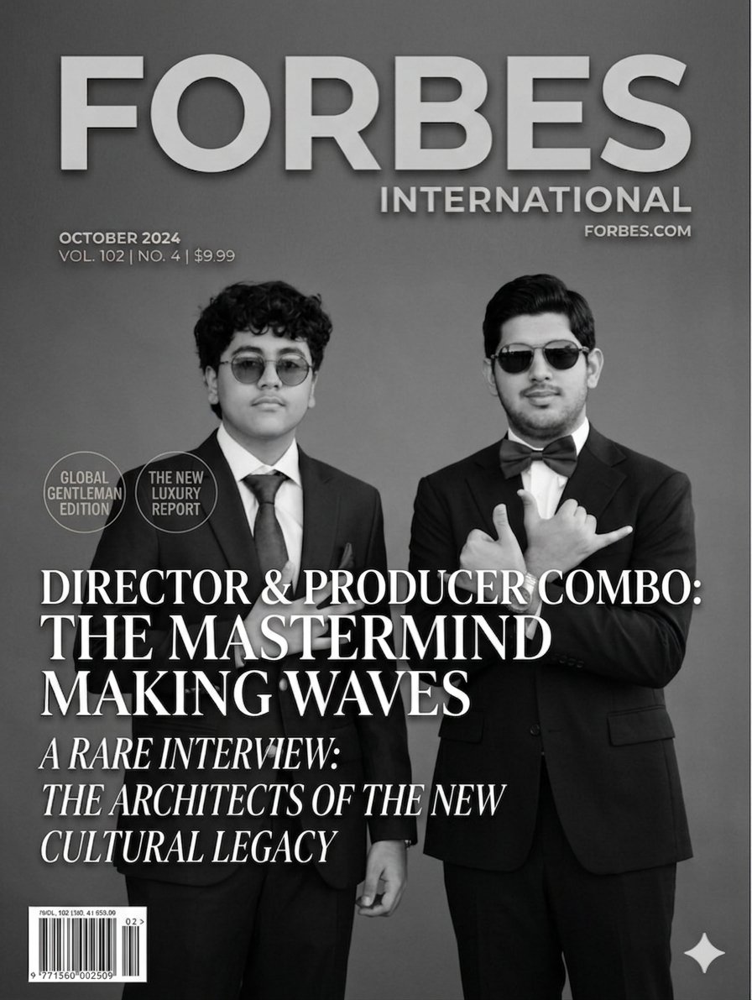

AR
The GOAT
Ahmed
Ahmed
Raza
Cameraman · Producer · The GOAT
Ahmed Raza is not just behind the camera — he is the camera. As the visionary producer and cinematographer who has worked alongside Muhammad Hasan Shekhani from the beginning, Raza brings an unparalleled technical and artistic eye to every project.
His work speaks for itself: a body of content that has shaped how stories are told and received. The GOAT tag is not self-applied — it was earned, frame by frame, production by production.
Technology Award Winner
Cameraman
Producer
The GOAT
Technology Award
Forbes Feature